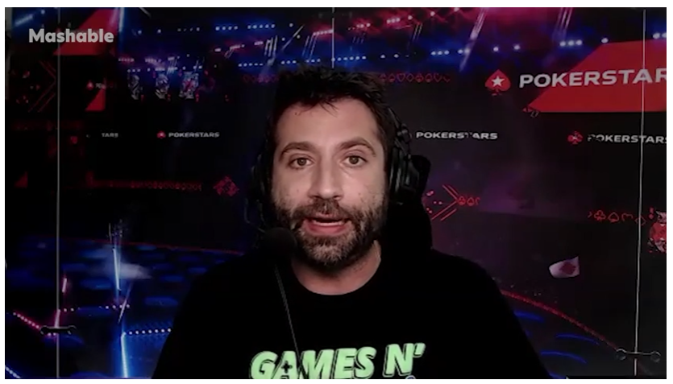
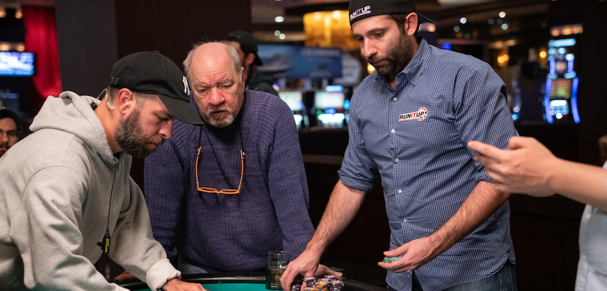

Sep 22,
2022

In a new comic book, the prominent presenter weaves a tale of a celebrated commentating career gone precariously off-course. Thankfully for poker’s renaissance man, it’s a work of fiction. Kind of.
To read the artice click here
Sep 11,
2022

Joe Stapleton is an American stand-up comedian and poker commentator who has been entertaining global audiences for a decade.
In his act Joe delivers the type of self-deprecating humour that if a meal in a restaurant, it would arrive at your table with a disclaimer stating any issues with digestion was on you. Through stand-up,
Joe generously explores the human experience and what you get from his act is an intimate and consensual performance full of almost, but not quite taboo humour.
To read the artice click here
Aug 14,
2022

To watch the cards up coverage go to Pokerstars Twitch Channel. There may be additional tournaments added to the broadcast schedule too,
so keep an eye on that check it out here
British Comedy Guide
Shuffling the Pack
Jul 6th,
2022

One thing comedians have to get used to when they go full-time is suddenly finding a lot more of it on their hands. Time, that is. Once they'd do a nine to five, daydreaming of material while staring at spreadsheets, then rush to gigs straight afterwards. Now you get up, stare at a blank Word document or scriptwriting app, daydream about anything but jokes then probably give up and play online poker instead. Which does then give you something to write about.
To read the article click here
Mar 12,
2022

The European Poker Tour (EPT) Prague is taking place right now, and someone who traveled across the pond to be there was
Joe “Stapes” Stapleton, who commentates EPT broadcasts alongside James Hartigan. The famed duo is actually fresh off
winning a Global Poker Award for their podcast, Poker in the Ears, and are excited to be reunited in person in the
booth.
To read the atricle visit here
Mar 7,
2022

The return of the European Poker Tour this week is a huge boost to a poker landscape that has missed the live EPT festivals put on by the market leader in global terms, PokerStars.
To read to the complete article visit here
Mar 2,
2022

In the latest PokerNews Podcast, Sarah Herring and Chad Holloway talk about Eugene Katchalov escaping Ukraine amid the
Russian invasion, more drama from Hustler Casino Live, and welcome guest Tom Wheaton to come talk about the upcoming
BetMGM March Poker Mania set to run March 20-27.
They then recap the trio of ARIA High Roller tournaments, offer highlights from the 2022 Wynn Millions $1,600 Mystery
Bounty, and chat with Joe "Stapes" Stapleton about the return of the European Poker Tour (EPT) and upcoming EPT Prague.
To listen to the podcast visit here
Feb 18,
2022
Congratulations to everyone of the Poker in The Ears crew! So very well deserved!
Feb 1,
2022

Legendary commentator Joe Stapleton joins Andrew and Carlos to talk about comedy, stirring the pot on Twitter, the challenges of color commentary for online events, poker NFTs, and more.
To listen to the podcast visit here
Octt 7, 2021

Poker consultant Joe Stapleton was tasked with overseeing all of Oscar Isaac's poker scenes in the new film The Card Counter — and it's all the better for it.
To read the complete Pokerstars Blog post click here
Sept 20, 2021

Paul Schrader's latest movie, "The Card Counter," focuses on William Tell (Oscar Isaac), a man who has done unforgivable things and has found comfort in, and gotten very good at, playing poker. The film is a character piece, an exploration of how some monsters are made — in Tell's case he became one when he was in the military at Abu Ghraib — and how one man creates a life rife with rituals and routine to cope with what he's done.
To read the complete SlashFilm article click here
Sept 17, 2021

Written and directed by Paul Schrader of Taxi Driver and Raging Bull fame (highlighting a long and impressive career résumé), the film stars Oscar Isaac, Tiffany Haddish, Tye Sheridan, and Willem Dafoe with Martin Scorsese an executive producer.
The film had its world premiere earlier this month at the Venice International Film Festival, with its official release coming last week on Sept. 10. Early reviews have been uniformly excellent, with some already predicting multiple Academy Award nominations when they are announced early next year.
To read the complete Pokerstars Blog post click here
Sept 10, 2021

Most poker fans have had the experience. A poker-related film or television show features action that really doesn’t play out as it would in the real world.
Joe Stapleton knows the feeling. The longtime poker player, commentator, and comedian hopes his role as a poker consultant on the new film The Card Counter helped add more realism to the story. Hopefully, the film won’t leave poker players rolling their eyes.
To read the complete USPoker.com article click here
Aug 25, 2021
The Charity Series of Poker is a non-profit organization that organizes and promotes charity poker tournaments to raise money and awareness for a variety of worthy charities. Since it was founded in 2014, the CSoP has hosted 32 events to raise funds for 17 different charities. On Saturday, August 28, Charity Series of Poker will be putting on a virtual event to benefit the St. Jude Children’s Research Hospital.
To read the complete Poker.org article click here
Aug 21, 2021

Poker commentator and comedian Joe Stapleton went 18 months without performing his stand-up routine due to COVID-19. But the jokester will get back on the grind August 27 at the Fourth Wall Cafe in Los Angeles, the first of many shows on the horizon for one of poker's goofiest characters.
To view the this episode click here